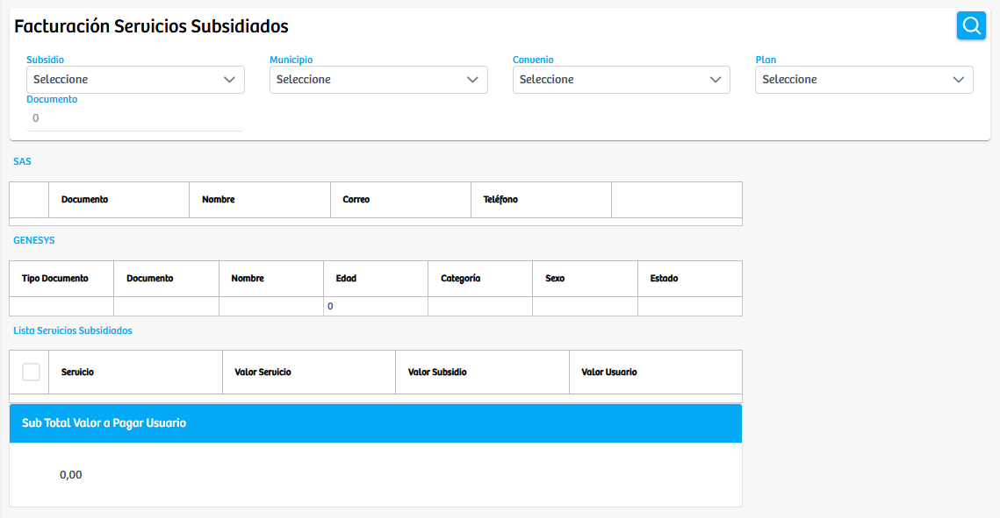
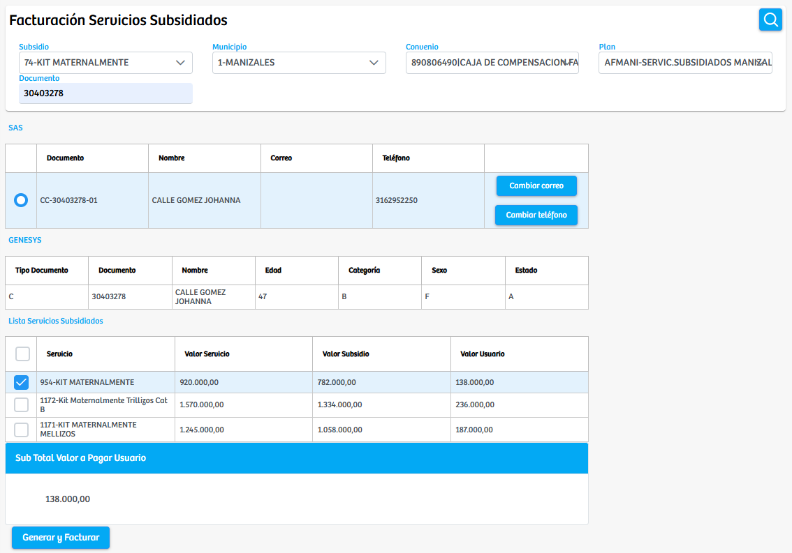
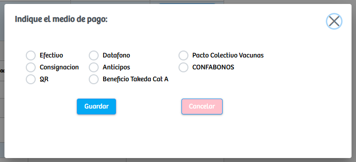

Modulos Sas-Web
Funcionalidades
Facturacion Servicios Subsidiados
El módulo Facturacion Servicios Subsidiados permite gestionar de manera ágil y organizada la facturación de servicios subsidiados asignados a un usuario según su subsidio y convenio. Al ingresar al módulo, se presentan varios campos de selección necesarios para realizar la búsqueda del beneficiario: Subsidio, Municipio, Convenio, Plan y Documento. Estos filtros permiten delimitar la información y garantizar que solo se carguen los registros correspondientes al usuario que se desea facturar.
Una vez completados los campos y ejecutada la búsqueda, el sistema mostrará el registro del usuario asociado, incluyendo los datos básicos obtenidos del sistema SAS y de GENESYS, tales como nombre, documento, contacto, categoría, sexo y estado. Al seleccionar al usuario, el sistema cargará automáticamente la lista de servicios subsidiados a los cuales tiene derecho según su clasificación y convenio.
Cada servicio listado muestra información relevante como: Valor del Servicio, Valor del Subsidio y Valor a Pagar por el Usuario. El usuario del sistema puede seleccionar uno o varios servicios marcando la casilla correspondiente. A medida que se seleccionan los servicios, el módulo calculará automáticamente el subtotal del valor a pagar, permitiendo visualizar en tiempo real el monto que se facturará.
Una vez seleccionados los servicios a facturar, se habilita el botón Generar y Facturar, el cual abre un modal que solicita seleccionar el método de pago. Dentro del modal se encuentran diversas opciones como: Efectivo, Datafono, Consignación, Anticipos, QR, Beneficio Takeda, Pacto Colectivo Vacunas o Confabonos. El usuario debe elegir el método adecuado y confirmar la operación para finalizar el proceso de facturación.
Este módulo centraliza el proceso completo, desde la validación del usuario y sus servicios subsidiados hasta la facturación final, facilitando una experiencia clara, controlada y eficiente para los responsables del procedimiento.